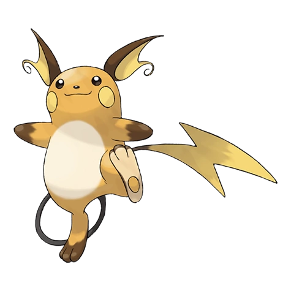

Raichu (Japanese: ライチュウ Raichuu) is an Electric-type Pokémon introduced in Generation I, and an Electric/Psychic-type introduced in Generation VII.
Biology
Physiology
Raichu is a rodent-like Pokémon, similar to its previous evolution forms. Unlike Pichu or Pikachu, which both have yellow fur, Raichu has orange fur with two strips of brown fur on its back. It has long ears and feet, but has little stubby arms with no noticeable fingers. Additionally, its electrical sacs are yellow, unlike its previous form's red coloring. It has a plump white belly, the tips of its arms and toes are brown. The soles of its feet are tan-colored and the paw pads on the undersides are yellowish orange. Raichu also have a long, thin, black tail that ends in a large lightning bolt shape. In its Alolan form, Raichu now slightly resembles an Audino. Its tail is now in an oval shape that allows Raichu to stand on it as if it is actually surfing. Alolan Raichu also now has bright blue eyes, darker skin tone, white hands and feet, and yellow ears pointing upwards.
Gender differences
Male Raichu have tips on their "lightning bolt tails" while females have flat ends on them. However for a time being, it remains unknown whether the Alolan Raichu have a similar gender differences on their tail as their original Kantonian counterpart.
Natural abilities
Raichu has the ability Static and the hidden ability Lightning Rod. Static allows Raichu to paralyze its foe when making a physical move. Lightning Rod allows Raichu to draw in all Electric-type attacks. Alolan Raichu has the ability Surge Surfer which doubles its speed when Electric Terrain is active. Being part-Psychic-type, Alolan Raichu can also learn Psychic apart from learning Electric type moves, even having the chance to learn the rare move Speed Swap. Able to control psychic powers, Alolan Raichu gathers psykenosis into its tail and uses it to ride around. When you scrub its cheek pouches, they emit very sweet aroma.
Behavior
Raichu is more confident, faithful and powerful than Pikachu, which makes them rivals, but sometimes it is just as friendly and cute. However, if it stores too much electricity in its body, it can become extremely short-tempered and aggressive. Yet, some of them are timid and will run away from people. Usually, Alolan Raichu are often more playful than their normal counterparts. They use their surfboard-like tails to ride waves and to float in mid-air. When their cheeks are rubbed, they emit both electricity and a sweet-smelling aroma. Locals of the Alola region often states that Raichu got this change from eating lots of fluffy pancakes, which are a common delicacy in the Alola region.
Evolution
Raichu is the evolved form of Pikachu, and the final evolutionary form of Pichu. Pikachu can evolve into either form of Raichu by the use of a Thunder Stone, but will only evolve into Alolan Raichu in Sun and Moon (and Ultra Sun and Ultra Moon unless it is evolved in Ultra Space). Before the release of Pokemon Bank for Sun and Moon, the normal form could not be obtained in either games without trading.
Trivia
Pokédex entries say that Raichu can discharge up to 100,000 volts, enough to paralyze a Dragonite. The Pokémon Stadium entry says that it can only do 10,000, however. In PokéPark 2: Wonders Beyond, Raichu appears in Cove Town as one of the trainers. After Pikachu defeats him in battle, he becomes Pikachu's teacher, able to upgrade his Thunderbolt, Iron Tail, and Dash. In one of its Pokédex entries, an Indian elephant is mentioned, which is interesting because, in the Pokémon World, such animals don't exist. An Indian elephant is also mentioned in one of the Pokédex entries for Gastly. In Generation VIII, a Pokémon based on an Indian Elephant (Copperajah) may possibly be this elephant. Though Raichu uses its tail for ground, in its debut, "Electric Shock Showdown", it was clearly standing on hind floor. In its Alolan form, Raichu is the only Electric/Psychic Pokemon. About the change of appearance of Alolan Raichu, researchers have totally no idea. Nevertheless, the Alolans don't even care about this at all. In fact, they say, "Is it not because of eating round pancakes?" Even though it is said in its Ultra Sun and Ultra Moon Pokedex entries that it gives off a sweet smell when you rub its cheeks, Alolan Raichu can't learn Sweet Scent. In Super Smash Bros., Alolan Raichu is one of the Pokémon that can be freed from Poké Balls. During this time, it uses the move Wild Charge. Alolan Raichu is the only dual-typed Pikaclone without a type immunity.